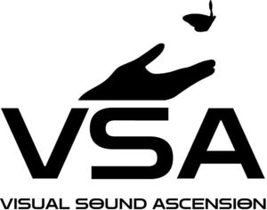

Trade Mark Journal No.2026/001 2 January 2026
WO0000001882581 (9,35,38,41,42,45)
Office of origin: Canada
Date of International Registration:14 May 2025
Date of designation in the UK:
14 May 2025

International priority date claimed: 15 November 2024
(Canada)
(2362576)
- Class 9
- Computer programs for user interface design; downloadable digital media content being music videos; downloadable virtual reality game software; virtual reality computer software, namely, software for setting up, operating, configuring, and controlling wearable virtual reality hardware; virtual reality software for cinematography; computer software for creating and editing music and sounds; computer software for processing digital music files; computer software for use in tracking the intellectual property rights of composers of music; downloadable computer software for searching databases featuring songs, music and audio content; downloadable computer software for the distribution, storage, and sharing of music and sounds.
- Class 35
- Online retail services for downloadable digital music; online retail store services relating to virtual goods, namely, music for use online and in online virtual worlds; online retail services for downloadable digital music utilizing blockchain technology; online retail store services relating to virtual goods, namely, music for use online and in online virtual worlds, utilizing blockchain technology.
- Class 38
- Broadcasting and streaming of audio and video recordings of live events via a website.
- Class 41
- Providing non-downloadable audio-visual content in the nature of music via a website; entertainment services, namely, providing non-downloadable music videos online via a mobile device; online publication of music; providing online music, not downloadable; production of musical videos; digital video and audio recording publishing services in the field of music; entertainment services in the nature of non-downloadable film, animation, comedy, theatre shows, music shows, musical variety shows, podcasts, news, documentary films, and shows in the fields of opera, art, dance, cooking, circus, reality event via the internet.
- Class 42
- Software as a service (SAAS) featuring a platform for the licensing, facilitation and exploitation of music rights; providing non-downloadable software for users to experience augmented reality visualization, manipulation and immersion; providing non-downloadable software for users to experience virtual reality visualization, manipulation and immersion; providing temporary use of non-downloadable software for users to collaborate and create custom augmented and virtual reality experiences; providing temporary use of non-downloadable computer software for creating music videos; provider of platform-as-a-service (PaaS) software enabling users to communicate with professionals in the fields of entertainment and music; providing non-downloadable artificial intelligence software for digital audio and video generation.
- Class 45
- Licensing of musical works, music licensing services, copyright licensing, licensing of rights relating to video productions, all of the foregoing services utilize blockchain technology; licensing of musical works; music licensing services; copyright licensing; licensing of rights relating to video productions.
Visual Sound Ascension Inc.
Representative: Marks & Clerk LLP, 45 Church Street Birmingham B3 2RT UNITED KINGDOM